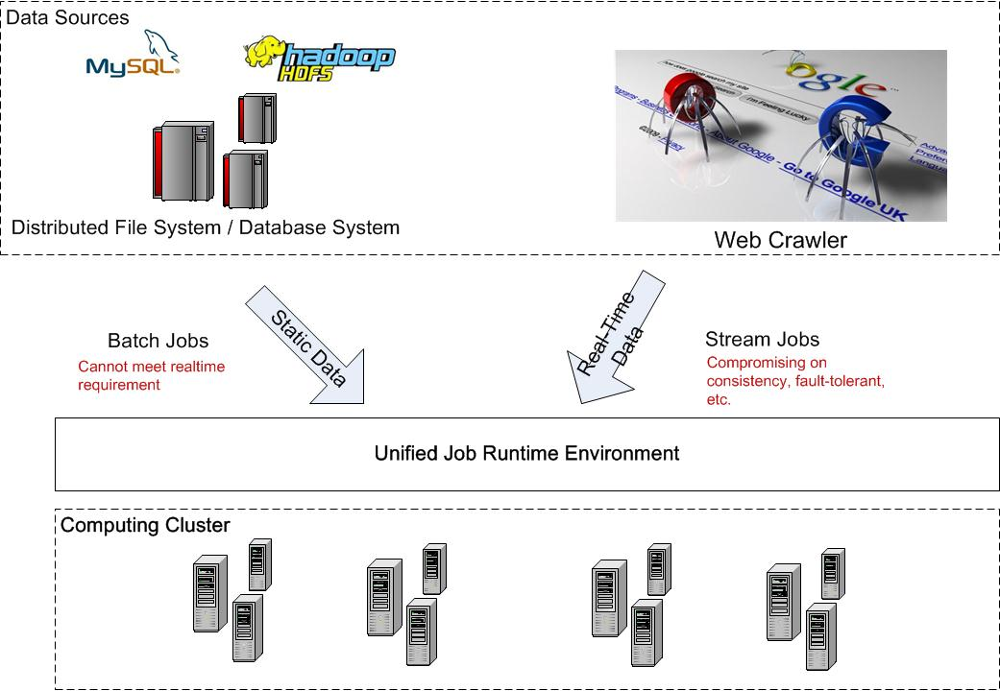

We are developing a user-friendly Machine Learning system, so that
You can analyze large volume of data efficiently, even you never learn programming stuffs
You can evaluate your new algorithms, even you are a machine learning expert but with limited system background
Machine learning algorithms may be applied to data which have been stored in database (batch job processing) or that coming to the system in real time (streaming processing). In most of solutions, there are two independent systems to handle these two cases, e.g. in Twitter, Hadoop is used to process data stored in HDFS or Hive [1]; Storm [2] is the streaming data processing platform to handle real-time data. Pure stream processing system suffers from fault-tolerance and consistency problem: A failed node may cause upstream backup takes a long time to recover and it's hard to reason about the global state, because different nodes may be processing data that arrived at different time. Discretized Stream [3] is the new model for streaming processing. It utilizes continuous batch jobs to emulate real time processing and provide the possibility to combine the batch and streaming processing platform. However discretized streaming applies large burden on the job scheduler and suffers from the straggler problem.
In this work, we are trying to achieve the unification of batch and stream processing: Improve the consistency and fault-tolerance of stream processing; Design the fast and accurate mechanism to sync real-time and historical data and report the statistical results; Design new batch processing engine supporting real time queries and enabling users to get the partial results before the query is completely finished.
